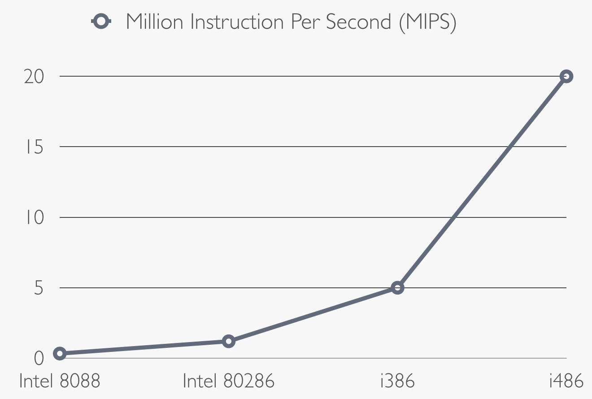
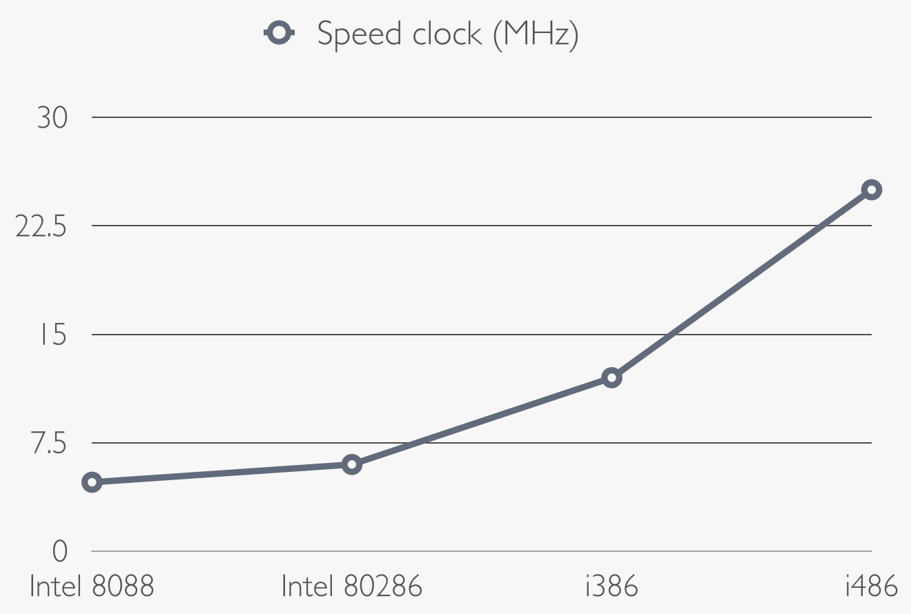

Intel microprocessors in 80s
Intel is the world's leading producer of processors. Intel has begun to produce processors with VLSI technology from the 70s.
Very Large Scale Integration (VLSI) had made possible to put first tens of thousands, then hundreds of thousands, and finally millions of
transistors on a single chip; it means smaller, faster and economic computers for the consumers.
Intel 8088
The processor 8088 was created by Intel in 1978. It is based on the revolutionary Intel 8086, the first processor with an x86 architecture.
Intel 8088 is cheaper and slower than the 8086: it's 16-bit microprocessor and it works with a frequency of 4,77 MHz whit 0.33 MIPS (million of instruction per second).
The Intel 8088 is the processor of the first IBM personal computer (IBM PCjr), it has been projected to work in an office or home machines.
The key of the success of this microprocessor was joined the high speed performance of the 16-bit Intel 8086 whit the new x86 architecture
and the support for the economic 8 bit chips.
Intel 80286
The Intel 80286 was introduced in 1982. The performance was more than twice that of its
predecessor (Intel 8088). Indeed, it is a 16-bit microprocessor with a clock speed of 6 MHz, 1.2 MIPS, and it was able to use 16 MB of RAM.
It was the
first processor compatible with the previous softwere and it was designed for running
multitasking programs as real-time process control or multi-user system.
The Intel 80286 is a microprocessor built for the second generation of PC, the generation
of the graphical user interface.
Intel 80386 and Intel 80486
The Intel 80386 or i386 was introduced in 1985 and it is the first Intel 32-bit microprocessor.
The first i386 has a frequency of 12 MHz, it can compute 5 MIPS and it has the new 32 bit register inside the CPU,
which permits to count huge numbers. The only problem was that it needs a new expensive motherboard to work
The successor of the i386 it's the Intel 80486 or i486, released in 1989. It is the first RISC and CISC architecture CPU, the first pipelined x86 microprocessor and the first chip to use more than a million of transistors.
The i486 instructions are faster evenly because it uses the pipeline architecture:
A pipelined CPU is a technique to increase the speed of the CPU. A pipelined CPU is divided in sectors and every sectors can work at the same time.
All this means high performance, indeed the i486 offers two-and-a-half times the performance of the i386 at the same
clock speed and the version with 25 MHz computes 20 MIPS.
The i486 has been replaced by the fourth generation of microprocessor, the Intel Pentium, in 1993; it is a 64-bit microprocessor which opened the market on the desktop PC while
the less expensive (in the energy and in the prize) i386 and i486 were the best solution for the new market of the notebooks.
 
External Links
- [Visited on 06/11/2014] Intel 80286(picture), Wikipedia copyright, Creative Commons license.
- [Visited on 06/11/2014] Intel 80386 and Intel 80486(picture), Publicity photograph.
- [Visited on 03/11/2014] Intel 8088 - Wikipedia
- [Visited on 03/11/2014] Intel 80286 - Wikipedia
- [Visited on 03/11/2014] Intel 80486 - Wikipedia
{kind=link}